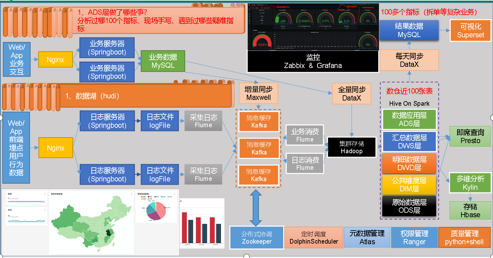
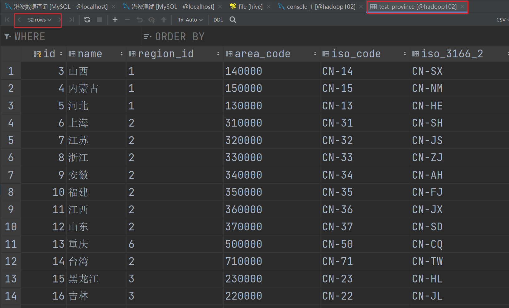

在线教育数仓中台立项方案
背景分析
企业制定决策，提供数据支持：构建数据仓库和BI看板，提高项目报告效率，提高客户满意度，沉淀项目数据资产，解决目前人工统计报表，没有直观数据产品的痛点。
业务数据：就是各行业在处理事务过程中产生的数据。比如用户在电商网站中登录、下单、支付等过程中，需要和网站后台数据库进行增删改查交互，产生的数据就是业务数据。业务数据通常存储在MySQL、Oracle等数据库中。
用户行为数据：用户在使用产品过程中，通过埋点收集与客户端产品交互过程中产生的数据，并发往日志服务器进行保存。比如页面浏览、点击、停留、评论、点赞、收藏等。
项目目标
面向人群及作用
面向人群：本产品赋能产品团队，可根据自身需求进行数据看板规划及落地数据 展示，其中包括日报、周报、月报、专项报告、数据看板；
优势及作用：通过标准数据仓库建设，各业务线统一使用平台能力实现降本增效；
价值体现：辅助团队提高撰写报告的效率 释放时间专注更高层的数据场景 解决临时数据查询需求。实现多业务线运营数据报告 辅助运营丰富关键指标。
项目架构
第一部分 采集平台-用户行为采集平台
第一章 数据仓库概念
数据仓库（ Data Warehouse ），是为企业制定决策，提供数据支持的。可以帮助企业改进业务流程、提高产品质量等。采集+存储+计算+分析。
数据仓库的输入数据通常包括：业务数据、用户行为数据和爬虫数据等
业务数据：就是各行业在处理事务过程中产生的数据。比如用户在网站中登录、下单、支付等过程中，需要和网站后台数据库进行增删改查交互，产生的数据就是业务数据。业务数据通常存储在MySQL、Oracle等数据库中。
用户行为数据：用户在使用产品过程中，通过埋点收集与客户端产品交互过程中产生的数据，并发往日志服务器进行保存。比如页面浏览、点击、停留、评论、点赞、收藏等。用户行为数据通常存储在日志文件中。
爬虫数据：通常是通过技术手段获取其他公司网站的数据。不建议同学们这样去做。
.png)
第二章 项目需求及架构设计
2.1 项目需求分析
（1）采集平台
- 用户行为数据采集平台搭建
- 业务数据采集平台搭建
2.2 项目框架
2.2.1 技术选型
2.2.2 系统数据流程设计

2.2.3 框架版本选择
2.2.4 服务器选型
2.2.5 集群规模
2.2.6 集群资源规划设计
在企业中通常会搭建一套生产集群和一套测试集群。生产集群运行生产任务，测试集群用于上线前代码编写和测试。
（1）生产集群
- 消耗内存的分开（NN和rm通常部署在不同的服务器上）
- 数据传输数据比较紧密的放在一起（如kafka和ZooKeeper部署在同一台服务器上）
- 客户端尽量放在一到两台服务器上，方便外部访问（hive，mysql，spark，Azkaban等客户端）
- 有依赖关系的尽量放到同一台服务器上（如hive和Azkaban Executor）
（2）测试集群
第三章 数据生成模块
3.1 目标数据
我们要收集和分析的数据主要包括页面数据、事件数据、曝光数据、启动数据、播放数据和错误数据。
3.1.1 页面（page）
页面数据主要记录一个页面的用户访问情况，包括访问时间、停留时间、页面路径等信息。
（1）日志范例
1 | { |
（2）所有页面类型如下：
1 | home("首页") |
（3）所有页面对象类型如下：
1 | course_id("课程Id") |
3.1.2 事件（actions）
事件数据主要记录应用内一个具体操作行为，包括操作类型、操作对象、操作对象描述等信息。
（1）日志范例
1 | { |
（2）所有动作类型如下：
1 | favor_add（新增收藏） |
（3）所有动作目标类型如下：
1 | course_id("课程Id") |
3.1.3 曝光（displays）
曝光数据主要记录页面所展示的内容，包括曝光对象，曝光类型等信息。
（1）日志范例
1 | { |
（2）所有曝光类型如下：
1 | promotion("商品推广") |
（3）所有曝光对象类型如下：
1 | course_id("课程Id") |
3.1.4 启动（start）
启动数据记录应用的启动信息。
（1）日志范例
1 | { |
（2）所有启动入口类型如下：
1 | icon("图标"), |
3.1.5 播放（appVideo）
播放日志记录播放信息
（1）日志范例
1 | { |
3.1.6 错误（err）
错误数据记录应用使用过程中的错误信息，包括错误编号及错误信息。
上述五种日志都有可能包含错误信息，此处仅对 appVideo 的错误日志进行展示。
（1）日志范例
1 | { |
3.2 数据埋点
3.2.1 主流埋点方式（了解）
目前主流的埋点方式，有代码埋点（前端/后端）、可视化埋点、全埋点三种。
代码埋点是通过调用埋点SDK函数，在需要埋点的业务逻辑功能位置调用接口，上报埋点数据。例如，我们对页面中的某个按钮埋点后，当这个按钮被点击时，可以在这个按钮对应的 OnClick 函数里面调用SDK提供的数据发送接口，来发送数据。
可视化埋点只需要研发人员集成采集 SDK，不需要写埋点代码，业务人员就可以通过访问分析平台的“圈选”功能，来“圈”出需要对用户行为进行捕捉的控件，并对该事件进行命名。圈选完毕后，这些配置会同步到各个用户的终端上，由采集 SDK 按照圈选的配置自动进行用户行为数据的采集和发送。
全埋点是通过在产品中嵌入SDK，前端自动采集页面上的全部用户行为事件，上报埋点数据，相当于做了一个统一的埋点。然后再通过界面配置哪些数据需要在系统里面进行分析。
3.2.2 埋点数据上报时机
埋点数据上报时机包括两种方式。
方式一，在离开该页面时，上传在这个页面产生的所有数据（页面、事件、曝光、错误等）。优点，批处理，减少了服务器接收数据压力。缺点，不是特别及时。
方式二，每个事件、动作、错误等，产生后，立即发送。优点，响应及时。缺点，对服务器接收数据压力比较大。
本次项目采用方式一埋点。
3.2.3 埋点数据日志结构
我们的日志结构大致可分为三类，一是普通页面埋点日志，二是启动日志，三是播放日志。
普通页面日志结构如下，每条日志包含了，当前页面的页面信息，所有事件（动作）、所有曝光信息以及错误信息。除此之外，还包含了一系列公共信息，包括设备信息，地理位置，应用信息等，即下边的common字段。
（1）普通页面埋点日志格式
1 | { |
（2）启动日志格式
启动日志结构相对简单，主要包含公共信息，启动信息和错误信息。
1 | { |
（3）播放日志
播放日志结构相对简单，主要包含公共信息，播放信息和错误信息。
1 | { |
3.3 服务器和JDK准备
3.3.1 服务器准备
看《Hadoop框架学习笔记》，不再赘述
3.3.2 阿里云服务器准备（略）
3.3.3 编写集群分发脚本xsync（略）
3.3.4 SSH无密登录配置（略）
3.3.5 JDK准备
3.3.6 环境变量配置说明
3.4 模拟数据
3.4.1 使用说明
（1）将application.yml、edu2021-mock-2022-06-18.jar、path.json、edu0222.sql、logback.xml上传到hadoop102的/opt/module/data_mocker目录下
①创建applog路径
1 | [root@hadoop102 module]# mkdir /opt/module/data_mocker |
②上传上述文件
1 | [root@hadoop102 data_mocker]# ll |
③application.yml文件
可以根据需求生成对应日期的用户行为日志。
修改配置文件，通过修改配置文件中的mock.date参数，可以得到不同日期的日志数据，其余参数可以根据注释，按照个人需求进行修改。
④path.json文件，可以灵活配置访问路径
⑤logback.xml文件，可以配置日志生成路径
（2）安装Mysql
见《Hive框架学习笔记》，mysql服务已经启动：
1 | [root@hadoop102 data_mocker]# systemctl status mysqld |
1 | [root@hadoop102 data_mocker]# mysql -uroot -p'wyhdhr19980418' |
执行以下命令，创建业务数据库edu，以及所有相关的表格
1 | mysql> create database edu charset utf8 default collate utf8_general_ci; |
3.4.2 数据生成测试
（1）修改application.yml配置文件中的参数，生成2022-2-21日的用户行为日志和业务数据。每次生成第一天的数据，都要将mock.clear.busi和mock.clear.user参数修改为1，表示将数据库中的实时数据和业务数据全部重置。
1 | mock.date: "2022-02-21" |
（2）模拟生成2022-2-21的数据
1 | [root@hadoop102 data_mocker]# java -jar edu2021-mock-2022-06-18.jar |
使用datagrip可以看到生成的业务数据，可以看到用户数据已经被重置了，新生成了50条创建日期为2022-02-21的用户数据
（3）在配置文件application.yml中修改如下配置，第二次生成的数据不清空原有数据
1 | mock.date: "2022-02-22" |
（4）再次执行命令，生成2022-02-22的数据
1 | [root@hadoop102 data_mocker]# java -jar edu2021-mock-2022-06-18.jar |
使用datagrip可以看到生成的业务数据，可以看到用户数据从原来的50条增加到了现在的100条，说明成功生成了新数据
3.4.3 数据生成脚本
脚本思路：
- 当生成第一天（2022-02-21）的数据时，通过sed命令，修改application.yml文件中mock.clear.busi和mock.clear.user参数为1
- 当生成其他日期的数据时，通过sed命令，修改application.yml文件中mock.clear.busi和mock.clear.user参数为0
（1）在~/bin目录下创建脚本mock.sh
1 | [root@hadoop102 bin]# vim mock.sh |
1 | !/bin/bash |
（2）增加脚本执行权限：
1 | [root@hadoop102 bin]# chmod 777 mock.sh |
（3）脚本使用说明：传入参数init，则生成2022-02-21以及前5天的数据，传入具体日期，如2022-02-22，则只生成该日期当天的数据
测试：传入init
1 | [root@hadoop102 ~]# mock.sh init |
2022-02-16~2022-02-21共6天的数据，每天50条，共300条：
测试：传入参数2022-02-22
1 | [root@hadoop102 ~]# mock.sh 2022-02-22 |
新增2022-02-22数据，共350条：
第四章 数据采集模块
4.1 集群所有进程查看脚本（略）
xcall.sh
4.2 Hadoop安装（略）
4.3 ZooKeeper安装（略）
4.4 Kafka安装（略）
4.5 采集日志Flume
4.5.1 Flume安装（略）
4.5.2 Flume组件选型
（1）Source
本项目主要从一个实时写入数据的文件夹中读取数据，Source可以选择Taildir Source、Exec Source、Spooling Directory Source
TailDir Source：断点续传、多目录。Flume1.6以前需要自己自定义Source记录每次读取文件位置，实现断点续传。
Exec Source可以实时搜集数据，但是在Flume不运行或者Shell命令出错的情况下，数据将会丢失。
Spooling Directory Source监控目录，支持断点续传。
（2）Channel
采用Kafka Channel，省去了Sink，提高了效率。KafkaChannel数据存储在Kafka里面，所以数据是存储在磁盘中。
注意在Flume1.7以前，Kafka Channel很少有人使用，因为发现parseAsFlumeEvent这个配置起不了作用。也就是无论parseAsFlumeEvent配置为true还是false，都会转为Flume Event。这样的话，造成的结果是，会始终都把Flume的headers中的信息混合着内容一起写入Kafka的消息中，这显然不是我所需要的，我只是需要把内容写入即可。
4.5.3 Flume配置
（1）Flume配置分析
如上图
（2）具体配置
在/opt/module/flume/job目录下创建file-flume-kafka.conf文件
1 | [root@hadoop102 job]# vim file-flume-kafka.conf |
1 | 为各组件命名 |
4.5.4 Flume拦截器
本层Flume需要自定义拦截器，通过自定义拦截器过滤掉JSON结构不完整的日志，做到对日志数据的初步清洗
（1）创建Maven工程edu-flume-interceptor
（2）创建包名：com.atguigu.flume.interceptor
（3）在pom.xml文件中添加如下依赖：
1 | <dependencies> |
（4）在com.atguigu.flume.interceptors包下创建JSONUtils类
1 | public class JSONUtils { |
（5）在com.atguigu.flume.interceptors包下创建ETLInterceptor类
1 | public class ETLInterceptor implements Interceptor { |
（6）打包
（7）将jar包上传至hadoop102的/opt/module/lib目录下
1 | [root@hadoop102 lib]# ls | grep inter |
（8）启动kafka集群，在Kafka集群中创建对应的topic
1 | [root@hadoop102 kafka]# kafka-topics.sh --bootstrap-server hadoop102:9092 --create --replication-factor 1 --partitions 1 --topic topic_log |
（9）启动Flume日志采集程序，采集目标文件中生成的日志文件
1 | [root@hadoop102 flume]# bin/flume-ng agent --name a1 --conf-file job/file-flume-kafka.conf --conf conf/ -Dflume.root.logger=INFO,console |
（10）启动Kafka的控制台消费者，等待Flume将数据发送至Kafka
1 | [root@hadoop102 kafka]# kafka-console-consumer.sh --bootstrap-server hadoop102:9092 --topic topic_log |
（11）启动日志生成程序，模拟日志生成
1 | [root@hadoop102 ~]# mock.sh 2022-02-22 |
同时可以看到kafka控制台消费者不停地消费日志数据，表示采集日志的Flume配置成功！！！
kafka消费端：
4.5.5 采集日志Flume启动、停止脚本
（1）在~/bin目录下创建脚本f1.sh
1 | [root@hadoop102 bin]# vim f1.sh |
1 | ! /bin/bash |
（2）增加脚本权限
1 | [root@hadoop102 bin]# chmod 777 f1.sh |
（3）启动脚本
1 | [root@hadoop102 bin]# f1.sh start |
（4）停止脚本
1 | [root@hadoop102 bin]# f1.sh stop |
4.6 消费Kafka数据的Flume
4.6.1 Flume组件选型
（1）FileChannel和MemoryChannel
金融类公司、对钱要求非常准确的公司通常会选择FileChannel。
传输的是普通日志信息（京东内部一天丢100万-200万条，这是非常正常的），通常选择MemoryChannel。
通过配置dataDirs指向多个路径，每个路径对应不同的硬盘，增大Flume吞吐量。checkpointDir和backupCheckpointDir也尽量配置在不同硬盘对应的目录中，保证checkpoint坏掉后，可以快速使用backupCheckpointDir恢复数据。
（2）Sink
选HDFS Sink；在元数据层面，每个小文件都有一份元数据，其中包括文件路径，文件名，所有者，所属组，权限，创建时间等，这些信息都保存在Namenode内存中。所以小文件过多，会占用Namenode服务器大量内存，影响Namenode性能和使用寿命。计算层面，默认情况下MR会对每个小文件启用一个Map任务计算，非常影响计算性能。同时也影响磁盘寻址时间。
基于以上考虑，在对HDFS Sink进行配置时，可以通过调整Flume官方提供的三个参数避免写入HDFS大量小文件，基于以上hdfs.rollInterval=3600，hdfs.rollSize=134217728，hdfs.rollCount =0几个参数综合作用，效果如下：
- 文件在达到128M时会滚动生成新文件
- 文件创建超3600秒时会滚动生成新文件
- 不通过Event个数来决定何时滚动生成新文件
4.6.2 Flume配置
（1）在hadoop104的/opt/module/flume/job目录下创建kafka-flume-hdfs.conf文件
1 | [root@hadoop104 job]# vim kafka-flume-hdfs.conf |
1 | # 组件 |
（2）在hadoop104节点服务器的/opt路径下创建data目录，用于存放FileChannel相关文件
1 | [root@hadoop104 opt]# mkdir data |
4.6.3 时间戳拦截器
由于flume默认会用linux系统时间，作为输出到HDFS路径的时间。如果数据是23:59分产生的。Flume消费kafka里面的数据时，有可能已经是第二天了，那么这部分数据会被发往第二天的HDFS路径。我们希望的是根据日志里面的实际时间，发往HDFS的路径，所以下面拦截器作用是获取日志中的实际时间。
思路：拦截JSON日志，通过fastjson框架解析JSON，获取实际时间ts。将获取的ts时间写入拦截器header中，header的key必须是timestamp，因为Flume框架会根据这个key值识别时间，并将数据写入HDFS对应时间的路径下。
（1）在com.atguigu.flume.interceptors包下创建TimestampInterceptor类
1 | public class TimestampInterceptor implements Interceptor { |
（2）重新打包
（3）将打好的包（带依赖）放入hadoop104的/opt/module/flume/lib文件夹下面
1 | [root@hadoop104 lib]# ls | grep interce |
4.6.4 日志消费层Flume启动、停止脚本
（1）在~/bin目录下创建脚本f2.sh
1 | [root@hadoop102 bin]# vim f2.sh |
1 | ! /bin/bash |
（2）增加脚本权限
1 | [root@hadoop102 bin]# chmod 777 f2.sh |
4.6.5 数据通道测试
分别生成2022-02-22和2022-02-23日期的数据，对用户行为日志数据的采集过程进行测试
（1）启动hadoop，zookeeper，kafka集群
1 | [root@hadoop102 bin]# xcall.sh jps |
（2）执行Flume启动脚本，启动Flume的日志采集程序
1 | [root@hadoop102 bin]# f1.sh start |
（3）执行脚本，生成2022-02-22和2022-02-23的日志数据
1 | [root@hadoop102 bin]# mock.sh 2022-02-22 |
可以观察到HDFS上有数据生成：
注意！注意！注意！
一定要保证位于hadoop102中的cd /opt/module/flume/job/文件下的文件file-flume-kafka.conf是独占该文件夹的，因为如果有其余的配置文件中也使用了a1就会出问题，当然可以换成a2,a3等。
同理也要保证hadoop104中的cd /opt/module/flume/job/文件下的文件kafka-flume-hdfs.conf是独占该文件夹的。
4.7 采集通道启动、停止脚本
在没有创建该脚本前，我们需要
（1）启动hadoop集群
（2）启动Zookeeper集群
（3）启动Kafka集群
（4）启动f1.sh
（5）启动f2.sh
（6）执行mock.sh 生成某日的日志数据
（7）查看确实在HDFS上产生了日志数据
（8）停止f2.sh
（9）停止f1.sh
（10）停止Kafka集群
（11）停止hadoop集群
（12）停止停止ZooKeeper集群
现在我们将以上步骤写成一个统一的脚本，供后续使用（注意脚本一定要写对，之前就是因为f1.sh和f2.sh写错了导致数据传输失败）。
（1）在~/bin目录下创建脚本cluster.sh
1 | [root@hadoop102 bin]# vim cluster.sh |
1 | !/bin/bash |
（2）增加脚本执行权限
1 | [root@hadoop102 bin]# chmod 777 cluster.sh |
第二部分 采集平台-业务数据采集平台
第一章 在线教育业务简介
1.1 在线教育业务流程
在线教育的主要业务流程包括用户前台浏览课程时的课程详情的管理，用户课程加入购物车进行支付时用户个人中心&支付服务的管理，用户支付完成后订单后台服务的管理，这些流程涉及到了十几个甚至几十个业务数据表，甚至更多。
1.2 在线教育表结构
在线教育业务表结构对于数据仓库的搭建来说非常重要，在进行数据导入之前，首先要做的就是熟悉业务表的结构
- 第一步观察所有表格的类型，了解表格大体分为哪几类
- 第二步认真分析了解每张表的每行数据代表的是什么意义
- 第三步要详细查看每张表的每个字段的含义以及业务逻辑，通过了解每一个字段的含义，也可以知道每张表都与哪些表产生了关联
以下为本在线教育系统涉及到的业务数据表结构关系。这25张表以订单表、用户表、 课程信息表、测验表和用户章节进度表为中心，延伸出了支付表、订单明细表、章节表、课程评价表、科目表、试卷表、知识点表等，用户表提供用户的详细信息，支付表提供该订单的支付详情，订单详情表提供订单的课程等情况，课程表给订单明细表提供课程的详细信息。本次讲解以此25个表为例，实际项目中，业务数据库中表格远远不止这些。

详细的表结构见书中
第二章 业务数据采集模块
2.1 业务数据梳理
业务数据通过运行mock.sh命令可以在MySQL中生成指定日期的业务数据。
使用EZDML数据库设计工具来梳理复杂的业务表关系。
（1）点击菜单“模型”->新建模型，命名为edu
（2）选中“模型”->点击菜单“模型”->导入数据库，如下填写：
（3）选择要到入的表，注意其中一个不勾选
（4）成功！
（5）建立表关系
示例：点击选中主表，再点击“连接”按钮，再点从表，配置如下：
（6）按照上述步骤，得到整个模型：
2.2 数据同步策略
数据同步是指将数据从关系型数据库同步到大数据的存储系统。业务数据是数据仓库的重要数据来源，我们需要每日定时从业务数据库中抽取数据，传输到数据仓库中，之后再对数据进行分析统计。为保证统计结果的正确性，需要保证数据仓库中的数据与业务数据库是同步的，离线数仓的计算周期通常为天，所以数据同步周期也通常为天，即每天同步一次即可。数据的同步策略有全量同步和增量同步。
全量同步，就是每天都将业务数据库中的全部数据同步一份到数据仓库，这是保证两侧数据同步的最简单的方式。适用于表数据量不大，且每天既会有新数据插入，又会有旧数据修改的场景。
增量同步，就是每天只将业务数据中的新增及变化数据同步到数据仓库。采用每日增量同步的表，通常需要在首日先进行一次全量同步。适用于表数据两较大，且每天只会有新数据插入的场景。
若业务表数据量比较大，且每天数据变化的比例比较低，这时应采用增量同步，否则可采用全量同步。增量同步：事实表；全量同步：维度表
由于后续数仓建模需要，cart_info需进行全量同步和增量同步，此处暂不解释，后续章节会作出解释。
2.3 数据同步工具
数据同步工具种类繁多，大致可分为两类，一类是以DataX、Sqoop为代表的基于Select查询的离线、批量同步工具，另一类是以Maxwell、Canal为代表的基于数据库数据变更日志（例如MySQL的binlog，其会实时记录所有的insert、update以及delete操作）的实时流式同步工具。
全量同步通常使用DataX、Sqoop等基于查询的离线同步工具。而增量同步既可以使用DataX、Sqoop等工具，也可使用Maxwell、Canal等工具，下面对增量同步不同方案进行简要对比。

本项目中，全量同步采用DataX，增量同步采用Maxwell。
2.4 数据同步工具部署
2.4.1 DataX
DataX 是阿里巴巴开源的一个异构数据源离线同步工具，致力于实现包括关系型数据库(MySQL、Oracle等)、HDFS、Hive、ODPS、HBase、FTP等各种异构数据源之间稳定高效的数据同步功能。
2.4.1.1 DataX设计理念
为了解决异构数据源同步问题，DataX将复杂的网状的同步链路变成了星型数据链路，DataX作为中间传输载体负责连接各种数据源。当需要接入一个新的数据源的时候，只需要将此数据源对接到DataX，便能跟已有的数据源做到无缝数据同步。
2.4.1.2 DataX框架设计
DataX本身作为离线数据同步框架，采用Framework + plugin架构构建。将数据源读取和写入抽象成为Reader/Writer插件，纳入到整个同步框架中。
2.4.1.3 DataX运行流程
下面用一个DataX作业生命周期的时序图说明DataX的运行流程、核心概念以及每个概念之间的关系。
举例来说，用户提交了一个DataX作业，并且配置了总的并发度为20，目的是对一个有100张分表的mysql数据源进行同步。DataX的调度决策思路是：
1）DataX Job根据分库分表切分策略，将同步工作分成100个Task。
2）根据配置的总的并发度20，以及每个Task Group的并发度5，DataX计算共需要分配4个TaskGroup。
3）4个TaskGroup平分100个Task，每一个TaskGroup负责运行25个Task。
2.4.1.4 DataX部署
（1）将安装包DataX上传到hadoop102的/opt/software
（2）解压到/opt/module
1 | [root@hadoop102 software]# tar -zxvf datax.tar.gz -C /opt/module/ |
（3）自检，执行如下命令
1 | [root@hadoop102 datax]# python /opt/module/datax/bin/datax.py /opt/module/datax/job/job.json |
1 | 出现以下信息证明安装成功 |
2.4.1.5 DataX使用概述
（1）DataX任务提交命令
DataX的使用十分简单，用户只需根据自己同步数据的数据源和目的地选择相应的Reader和Writer，并将Reader和Writer的信息配置在一个json文件中，然后执行如下命令提交数据同步任务即可。
1 | [root@hadoop102 datax]# python /opt/module/datax/bin/datax.py /opt/module/datax/job/job.json |
（2）DataX配置文件格式
可以使用如下命名查看DataX配置文件模板。
1 | [root@hadoop102 datax]# python bin/datax.py -r mysqlreader -w hdfswriter |
配置文件模板如下，json最外层是一个job，job包含setting和content两部分，其中setting用于对整个job进行配置，content用户配置数据源和目的地。
1 | DataX (DATAX-OPENSOURCE-3.0), From Alibaba ! |
2.4.1.6 同步MySQL数据到HDFS案例
案例要求：同步edu数据库中base_province表数据到HDFS的/base_province目录
需求分析：要实现该功能，需选用MySQLReader和HDFSWriter，MySQLReader具有两种模式分别是TableMode和QuerySQLMode，前者使用table，column，where等属性声明需要同步的数据；后者使用一条SQL查询语句声明需要同步的数据。
下面分别使用两种模式进行演示。
（1）MySQLReader之TableMode
①Reader参数说明
②Writer参数说明
③Setting参数说明
④创建配置文件base_province_tm.json
1 | { |
⑤在HDFS创建/base_province目录
使用DataX向HDFS同步数据时，需确保目标路径已存在
1 | [root@hadoop102 job]# hadoop fs -mkdir /base_province |
⑥执行DataX命令
1 | [root@hadoop102 datax]# python bin/datax.py job/base_province_tm.json |
1 | 2023-11-12 21:16:02.540 [job-0] INFO JobContainer - |
⑦查看HDFS文件
1 | [root@hadoop102 datax]# hadoop fs -cat /base_province/base_province__4c688c48_a411_4b0a_9080_6af730614b9d.gz | zcat |
（2）MySQLReader之QuerySQLMode
①新建配置文件
1 | [root@hadoop102 datax]# vim /opt/module/datax/job/base_province_qm.json |
1 | { |
②执行DataX命令
1 | [root@hadoop102 datax]# python bin/datax.py job/base_province_qm.json |
1 | 2023-11-12 21:28:36.044 [job-0] INFO JobContainer - |
③查看结果
1 | [root@hadoop102 datax]# hadoop fs -cat /base_province/base_province__6807575d_d1d2_4521_81b8_8f13e4b387ca.gz | zcat |
（3）DataX传参
通常情况下，离线数据同步任务需要每日定时重复执行，故HDFS上的目标路径通常会包含一层日期，以对每日同步的数据加以区分，也就是说每日同步数据的目标路径不是固定不变的，因此DataX配置文件中HDFS Writer的path参数的值应该是动态的。为实现这一效果，就需要使用DataX传参的功能。
DataX传参的用法如下，在JSON配置文件中使用${param}引用参数，在提交任务时使用-p”-Dparam=value”传入参数值，具体示例如下。
①新增配置文件
1 | [root@hadoop102 job]# vim /opt/module/datax/job/base_province_qm_param.json |
1 | { |
②创建目标路径
1 | [root@hadoop102 job]# hadoop fs -mkdir /base_province/2022-02-21 |
③执行如下命令
1 | [root@hadoop102 datax]# python bin/datax.py -p"-Ddt=2022-02-21" job/base_province_qm_param.json |
1 | 2023-11-13 13:05:45.849 [job-0] INFO JobContainer - |
④查看结果
2.4.1.7 同步HDFS数据到MySQL案例
案例要求：同步HDFS上的/base_province目录下的数据到MySQL edu 数据库下的test_province表。
需求分析：要实现该功能，需选用HDFSReader和MySQLWriter。
①Reader参数说明
②Writer参数说明
③创建配置文件
1 | [root@hadoop102 datax]# vim /opt/module/datax/job/test_province.json |
1 | { |
④在MySQL中的edu数据库创建test_province表
1 | DROP TABLE IF EXISTS `test_province`; |
⑤执行如下命令
1 | [root@hadoop102 datax]# python bin/datax.py job/test_province.json |
1 | 2023-11-13 13:25:57.981 [job-0] INFO JobContainer - |
⑥查看MySQL目标表数据
可以看到只有32条数据，因为我们使用了replace，相同的id被替换
2.4.1.8 DataX优化
（1）速度控制
DataX3.0提供了包括通道(并发)、记录流、字节流三种流控模式，可以随意控制你的作业速度，让你的作业在数据库可以承受的范围内达到最佳的同步速度。
关键优化参数如下：
注意事项：
1.若配置了总record限速，则必须配置单个channel的record限速
2.若配置了总byte限速，则必须配置单个channe的byte限速
3.若配置了总record限速和总byte限速，channel并发数参数就会失效。因为配置了总record限速和总byte限速之后，实际channel并发数是通过计算得到的：
计算公式为:
min(总byte限速/单个channle的byte限速，总record限速/单个channel的record限速)
配置示例：
1 | { |
（2）内存调整
当提升DataX Job内Channel并发数时，内存的占用会显著增加，因为DataX作为数据交换通道，在内存中会缓存较多的数据。例如Channel中会有一个Buffer，作为临时的数据交换的缓冲区，而在部分Reader和Writer的中，也会存在一些Buffer，为了防止OOM等错误，需调大JVM的堆内存。
建议将内存设置为4G或者8G，这个也可以根据实际情况来调整。
调整JVM xms xmx参数的两种方式：一种是直接更改datax.py脚本；另一种是在启动的时候，加上对应的参数，如下：
1 | python datax/bin/datax.py --jvm="-Xms8G -Xmx8G" /path/to/your/job.json |
2.4.2 Maxwell
Maxwell 是由美国Zendesk公司开源，用Java编写的MySQL变更数据抓取软件。它会实时监控Mysql数据库的数据变更操作（包括insert、update、delete），并将变更数据以 JSON 格式发送给 Kafka、Kinesi等流数据处理平台。
2.4.2.1 Maxwell输出数据格式
2.4.2.2 Maxwell原理
Maxwell的工作原理是实时读取MySQL数据库的二进制日志（Binlog），从中获取变更数据，再将变更数据以JSON格式发送至Kafka等流处理平台。二进制日志（Binlog）是MySQL服务端非常重要的一种日志，它会保存MySQL数据库的所有数据变更记录。Binlog的主要作用包括主从复制和数据恢复。Maxwell的工作原理和主从复制密切相关。
MySQL主从复制
MySQL的主从复制，就是用来建立一个和主数据库完全一样的数据库环境，这个数据库称为从数据库。
1）主从复制的应用场景如下：
（1）做数据库的热备：主数据库服务器故障后，可切换到从数据库继续工作。
（2）读写分离：主数据库只负责业务数据的写入操作，而多个从数据库只负责业务数据的查询工作，在读多写少场景下，可以提高数据库工作效率。
2）主从复制的工作原理如下：
（1）Master主库将数据变更记录，写到二进制日志(binary log)中
（2）Slave从库向mysql master发送dump协议，将master主库的binary log events拷贝到它的中继日志(relay log)
（3）Slave从库读取并回放中继日志中的事件，将改变的数据同步到自己的数据库。
先写数据库，再写日志。
Maxwell原理就是将自己伪装成slave，并遵循MySQL主从复制的协议，从master同步数据。
2.4.2.3 Maxwell部署
（1）将安装包上传到/opt/software目录（用教学版）
（2）将安装包解压至/opt/module
1 | [root@hadoop102 software]# tar -zxvf maxwell-1.29.2.tar.gz -C /opt/module/ |
（3）修改名称
1 | [root@hadoop102 module]# mv maxwell-1.29.2/ maxwell |
（4）启用MySQL Binlog
①修改MySQL配置文件/etc/my.cnf
1 | [root@hadoop102 ~]# vim /etc/my.cnf |
1 | 数据库id |
注：MySQL Binlog模式
Statement：基于语句，Binlog会记录所有写操作的SQL语句，包括insert、update、delete等。
优点： 节省空间
缺点： 有可能造成数据不一致，例如insert语句中包含now()函数，写入binlog和读取binlog时函数的所得值不同。
Row：基于行，Binlog会记录每次写操作后被操作行记录的变化。
优点：保持数据的绝对一致性。
缺点：占用较大空间。
mixed：混合模式，默认是Statement，如果SQL语句可能导致数据不一致，就自动切换到Row。
Maxwell要求Binlog采用Row模式。
②重启MySQL服务
1 | [root@hadoop102 ~]# systemctl restart mysqld |
③验证Binlog开启
1 | mysql> show master status; |
（5）创建Maxwell所需数据库和用户
Maxwell需要在MySQL中存储其运行过程中的所需的一些数据，包括binlog同步的断点位置（Maxwell支持断点续传）等等，故需要在MySQL为Maxwell创建数据库及用户。
①创建数据库
1 | msyql> CREATE DATABASE maxwell; |
②调整MySQL数据库密码级别
1 | mysql> set global validate_password_policy=0; |
③创建Maxwell用户并赋予其必要权限
1 | mysql> CREATE USER 'maxwell'@'%' IDENTIFIED BY 'maxwell'; |
（6）配置Maxwell
①修改Maxwell配置文件名称
1 | [root@hadoop102 maxwell]# cp config.properties.example config.properties |
②修改Maxwell配置文件
1 | [root@hadoop102 maxwell]# vim config.properties |
2.4.2.4 Maxwell使用
（1）启动ZooKeeper和Kafka集群
1 | [root@hadoop102 maxwell]# xcall.sh jps |
（2）Maxwell启停脚本
1 | [root@hadoop102 bin]# vim mxw.sh |
1 | !/bin/bash |
1 | [root@hadoop102 bin]# chmod 777 mxw.sh |
（3）增量数据同步
①启动kafka消费者
1 | [root@hadoop102 kafka]# kafka-console-consumer.sh --bootstrap-server hadoop102:9092 --topic maxwell |
②启动Maxwell
1 | [root@hadoop102 maxwell]# mxw.sh start |
③模拟生成数据
1 | [root@hadoop102 maxwell]# mock.sh 2022-02-22 |
④观察Kafka消费者
（4）历史数据全量同步
上一节，我们已经实现了使用Maxwell实时增量同步MySQL变更数据的功能。但有时只有增量数据是不够的，我们可能需要使用到MySQL数据库中从历史至今的一个完整的数据集。这就需要我们在进行增量同步之前，先进行一次历史数据的全量同步。这样就能保证得到一个完整的数据集。
Maxwell提供了bootstrap功能来进行历史数据的全量同步，命令如下（执行该命令之前要求Maxwell是启动的状态）：
1 | [root@hadoop102 bin]# /opt/module/maxwell/bin/maxwell-bootstrap --database edu --table base_province --config /opt/module/maxwell/config.properties |
观察Kafka消费端：采用bootstrap方式同步的输出数据格式如下：
1 | {"database":"edu","table":"base_province","type":"bootstrap-start","ts":1699862655,"data":{}} |
第一条type为bootstrap-start和最后一条type为bootstrap-complete的数据，是bootstrap开始和结束的标志，不包含数据，中间的type为bootstrap-insert的数据才包含数据。
一次bootstrap输出的所有记录的ts都相同，为bootstrap开始的时间。
2.5 全量表数据同步
2.5.1 数据通道
全量表数据由DataX从MySQL业务数据库直接同步到HDFS，具体数据流向如下图所示。
2.5.2 DataX配置文件（配置文件生成脚本）
方便起见，此处提供了DataX配置文件批量生成脚本
1 | [root@hadoop102 bin]# vim ~/bin/gen_import_config.py |
1 | # coding=utf-8 |
①安装Python Mysql驱动
1 | [root@hadoop102 bin]# yum install MySQL-python |
②脚本使用说明
1 | python gen_import_config.py -d database -t table |
通过-d传入数据库名，-t传入表名，执行上述命令即可生成该表的DataX同步配置文件
③在~/bin目录下创建gen_import_config.sh脚本，用于调用配置文件生成脚本，生成批量的配置文件
1 | [root@hadoop102 bin]# vim gen_import_config.sh |
1 | !/bin/bash |
④为gen_import_config.sh脚本增加权限
1 | [root@hadoop102 bin]# chmod 777 gen_import_config.sh |
⑤执行gen_import_config.sh脚本，生成配置文件
1 | [root@hadoop102 bin]# gen_import_config.sh |
⑥观察生成的配置文件
1 | [root@hadoop102 bin]# cd /opt/module/datax/job/import/ |
⑦测试生成的DataX配置文件
以base_province为例，测试用脚本生成的配置文件是否可用。
创建目标路径
1 | [root@hadoop102 import]# hadoop fs -mkdir -p /origin_data/edu/db/base_province_full/2022-02-21 |
执行DataX同步命令
1 | [root@hadoop102 import]# python /opt/module/datax/bin/datax.py -p"-Dtargetdir=/origin_data/edu/db/base_province_full/2022-02-21" /opt/module/datax/job/import/edu.base_province.json |
查看HDFS目标路径出现数据
至此，我们编写gen_import_config.py为了生成某个datax配置文件，编写gen_import_config.sh为了批量生成15个datax配置文件，下面我们再编写mysql_tp_hdfs.sh为了批量运行这15个配置文件从而将数据从mysql数据库同步到HDFS。
2.5.3 全量表数据同步脚本
为方便使用以及后续的任务调度，此处编写一个全量表数据同步脚本。
（1）创建mysql_to_hdfs_full.sh脚本
1 | [root@hadoop102 bin]# vim mysql_to_hdfs_full.sh |
1 | !/bin/bash |
（2）为脚本增加执行权限
1 | [root@hadoop102 bin]# chmod 777 mysql_to_hdfs_full.sh |
（3）测试同步脚本
1 | [root@hadoop102 bin]# mysql_to_hdfs_full.sh all 2022-02-21 |
（4）查看HDFS目标路径是否出现全量数据，全量共15张表
全量表同步逻辑比较简单，只需每天执行全量表数据同步脚本mysql_to_hdfs_full.sh即可。
2.6 增量表数据同步
2.6.1 数据通道
首先通过Maxwell将需要执行增量策略的表格变动数据发送至Kafka的对应topic中，然后使用Flume将kafka中的数据采集落盘至HDFS中。
2.6.2 Maxwell配置
（1）修改Maxwell配置文件config.properties
1 | [root@hadoop102 maxwell]# vim config.properties |
1 | log_level=info |
（2）重启Maxwell
1 | [root@hadoop102 maxwell]# mxw.sh restart |
（3）采集通道测试
①启动zookeeper和kafka
1 | [root@hadoop102 maxwell]# zk.sh start |
②启动一个kafka控制台消费者，消费topic_db主题的数据
1 | [root@hadoop102 kafka]# kafka-console-consumer.sh --bootstrap-server hadoop102:9092 --topic topic_db |
③生成模拟数据
1 | [root@hadoop102 maxwell]# mock.sh 2022-02-22 |
④观察kafka消费者是否能消费到数据
2.6.3 Flume配置
Flume需要将Kafka中的数据传输至HDFS，所以需要选用Kafka Source和HDFS Sink，Channel选用File Channel。需要注意的是，Maxwell将监控到的业务数据库中的全部变动数据均发往了同一个Kafka主题，所以不同表格的变动数据是混合在一起的。因此我们需要自定义一个拦截器，在拦截器中识别数据中的表格信息，获取tableName，添加至header中。HDFS Sink在将数据落盘至HDFS时，通过识别header中的tableName，可以将不同表格的数据写入不同的路径下。
具体示例如下：一条变动数据被Maxwell采集发送至Kafka的topic_db主题中，其中包含时间戳ts。Flume的Kafka Source在采集到这条数据之后。通过如下图的关键配置，将tableName->order_info和ts->1645425636两个关键键值对写入header。HDFS将这条数据落盘时，即可根据header中封装的tableName和ts信息，写入对应的文件夹中。通过以上操作，使得数据可以存放于对应表名命名的文件夹下对应时间命名的文件中。
（1）创建Flume配置文件
1 | [root@hadoop104 job]# vim kafka_to_hdfs_db.conf |
1 | a1.sources = r1 |
（2）编写Flume拦截器
此拦截器用于提取数据中包含的表名信息和时间戳信息，将秒级时间戳转换至毫秒级时间戳，并将表名和时间戳添加至header中。
创建TimestampAndTableNameInterceptor类
1 | public class TimestampAndTableNameInterceptor implements Interceptor { |
（3）打包
（4）删除原来的jar包，将打包好的jar包放入hadoop104的/opt/module/flume/lib文件夹下
1 | [root@hadoop104 lib]# ls | grep inter |
（5）采集通道测试
①确保启动Zookeeper、Kafka、Maxwell
②启动hadoop104节点的Flume Agent
1 | [root@hadoop104 flume]# bin/flume-ng agent -n a1 -c conf/ -f job/kafka_to_hdfs_db.conf -Dflume.root.logger=INFO,console |
③模拟业务数据生成
1 | [root@hadoop102 job]# mock.sh 2022-02-22 |
④在HDFS端出现了新采集的，以inc结尾的增量数据
（6）数据目标路径的日期说明
仔细观察，会发现目标路径中的日期，并非模拟数据的业务日期，而是当前日期。这是由于Maxwell输出的JSON字符串中的ts字段的值，是数据的变动日期。而真实场景下，数据的业务日期与变动日期应当是一致的。
此处为了模拟真实环境，对Maxwell源码进行了改动，增加了一个参数mock_date，该参数的作用就是指定Maxwell输出JSON字符串的ts时间戳的日期。
接下来进行测试：
①修改Maxwell配置文件config.properties，增加mock_date参数：
1 | 教学环境添加的配置项，使 Maxwell 输出数据中时间戳对应日期与业务数据的日期相同 |
②重启Maxwell
1 | [root@hadoop102 maxwell]# mxw.sh restart |
③重新生成模拟数据
1 | [root@hadoop102 maxwell]# cd /opt/module/data_mocker/ |
④可以看到，日期与模拟数据日期一致：
（7）上述操作在每次需要模拟数据时，都需要修改Maxwell的配置文件并且重启Maxwell，过于繁琐。鉴于Maxwell中配置文件修改的mock.date参数，需要与模拟数据时配置文件中的mock.date参数相同，所以我们修改mock.sh脚本，在其中添加代码，同时修改两项配置文件，并重启Maxwell。
1 | !/bin/bash |
修改脚本后，重新执行脚本
1 | [root@hadoop102 bin]# mock.sh 2022-02-22 |
再次观察HDFS目标路径下的数据，路径的时间已经被修正为数据中的时间
（8）编写Flume启停脚本
在hadoop102节点服务器的~/bin目录下创建f3.sh
1 | [root@hadoop102 bin]# vim f3.sh |
1 | !/bin/bash |
增加脚本执行权限
1 | [root@hadoop102 bin]# chmod 777 f3.sh |
2.6.4 增量表首日全量同步
通常情况下，增量表需要在首日进行一次全量同步，后续每日再进行增量同步，首日全量同步可以使用Maxwell的bootstrap功能，方便起见，下面编写一个增量表首日全量同步脚本。
（1）在~/bin目录创建mysql_to_kafka_inc_init.sh
1 | [root@hadoop102 bin]# vim mysql_to_kafka_inc_init.sh |
1 | !/bin/bash |
（2）增加执行权限
1 | [root@hadoop102 bin]# chmod 777 mysql_to_kafka_inc_init.sh |
（3）清理历史数据
1 | [root@hadoop102 bin]# hadoop fs -ls /origin_data/edu/db | grep _inc | awk '{print $8}' | xargs hadoop fs -rm -r -f |
（4）执行同步脚本
1 | [root@hadoop102 bin]# mysql_to_kafka_inc_init.sh all |
（5）检查同步结果
2.6.5 总结
增量表同步，需要在首日进行一次全量同步，后续每日才是增量同步。首日进行全量同步时，需先启动数据通道，包括Maxwell、Kafka、Flume，然后执行增量表首日同步脚本mysql_to_kafka_inc_init.sh进行同步。后续每日只需保证采集通道正常运行即可，Maxwell便会实时将变动数据发往Kafka。
2.7 数据采集流程总结
2.7.1 清除所有数据
（1）清空hadoop102节点服务器上模拟生成的用户行为日志数据
1 | [root@hadoop102 bin]# rm -rf /opt/module/data_mocker/log |
（2）清空HDFS上所有已经采集成功的数据
1 | [root@hadoop102 bin]# hadoop fs -rm -r -f /origin_data |
2.7.2 启动系统
（1）执行集群启动脚本，开启hadoop、zookeeper、kafka以及用户行为数据采集系统
1 | [root@hadoop102 bin]# cluster.sh start |
（2）启动Maxwell
1 | [root@hadoop102 bin]# mxw.sh start |
（3）启动业务数据采集Flume
1 | [root@hadoop102 bin]# f3.sh start |
2.7.3 首日数据生成及采集
（1）进行首日数据模拟
1 | [root@hadoop102 bin]# mock.sh init |
（2）将全量数据同步采集至HDFS中
1 | [root@hadoop102 bin]# mysql_to_hdfs_full.sh all 2022-02-21 |
（3）使用Maxwell将执行增量同步策略的业务数据表格进行初始化同步（bootstrap）
1 | [root@hadoop102 bin]# mysql_to_kafka_inc_init.sh all |
（4）观察HDFS上的数据采集情况，在HDFS上已经采集到了所有业务数据，包括增量数据和全量数据
业务数据：
用户行为数据：
2.7.4 每日数据生成及采集
（1）每日数据模拟
1 | [root@hadoop102 bin]# mock.sh 2022-02-22 |
（2）业务数据全量同步
1 | [root@hadoop102 bin]# mysql_to_hdfs_full.sh all 2022-02-22 |
（3）观察HDFS上的数据采集情况
用户行为数据：
业务数据：
在数据仓库系统的运行过程中，要保证hadoop、zookeeper、kafka、Flume采集程序、Maxwell等持续运行，此后模拟生成每日数据，用户行为日志数据和业务数据中的增量数据会通过kafka和Flume自动采集至HDFS中。而业务数据中的全量数据则依靠每日执行业务数据全量同步脚本进行定时采集。
关闭顺序：f3.sh stop –> mxw.sh stop –> cluster.sh stop
第三部分 数据仓库系统
第一章 数据仓库概述
1.1 数据仓库概述
数据仓库是一个为数据分析而设计的企业级数据管理系统。数据仓库可集中、整合多个信息源的大量数据，借助数据仓库的分析能力，企业可从数据中获得宝贵的信息进而改进决策。同时，随着时间的推移，数据仓库中积累的大量历史数据对于数据科学家和业务分析师也是十分宝贵的。
1.2 数据仓库核心架构
ODS层保留原始数据，将分析后的数据落入其他层，使得数据仓库是分层设计的
第二章 数据仓库建模概述（部分参考阿里巴巴大数据之路）
2.1 数据仓库建模的意义
数据模型就是数据组织和存储方法，它强调从业务、数据存取和使用角度合理存储数据。只有将数据有序的组织和存储起来之后，数据才能得到高性能、低成本、高效率、高质量的使用。
高性能：良好的数据模型能够帮助我们快速查询所需要的数据。
低成本：良好的数据模型能减少重复计算，实现计算结果的复用，降低计算成本。
高效率：良好的数据模型能极大的改善用户使用数据的体验，提高使用数据的效率。
高质量：良好的数据模型能改善数据统计口径的混乱，减少计算错误的可能性。
建设数据仓库的目标：将数据有序、有结构地分类组织和存储
2.2 数据仓库建模方法论
主流的数据仓库设计模型有两种，Bill Inmon支持的关系模型和Ralph Kimball支持的维度模型。
2.2.1 ER模型
数据仓库之父Bill Inmon提出的建模方法是从全企业的高度，用实体关系（Entity Relationship，ER）模型来描述企业业务，并用规范化的方式表示出来，在范式理论上符合3NF。
（1）实体关系模型
实体关系模型将复杂的数据抽象为两个概念——实体和关系。实体表示一个对象，例如学生、班级，关系是指两个实体之间的关系，例如学生和班级之间的从属关系。
（2）数据库规范化
数据库规范化是使用一系列范式设计数据库（通常是关系型数据库）的过程，其目的是减少数据冗余，增强数据的一致性。
这一系列范式就是指在设计关系型数据库时，需要遵从的不同的规范。关系型数据库的范式一共有六种，分别是第一范式（1NF）、第二范式（2NF）、第三范式（3NF）、巴斯-科德范式（BCNF）、第四范式(4NF）和第五范式（5NF）。遵循的范式级别越高，数据冗余性就越低。
（3）函数依赖
（4）第一范式
（5）第二范式
（6）第三范式

下图为一个采用Bill Inmon倡导的建模方法构建的模型，从图中可以看出，较为松散、零碎，物理表数量多。关系模型主要应用于OLTP系统中。
这种建模方法的出发点是整合数据，其目的是将整个企业的数据进行组合和合并，并进行规范处理，减少数据冗余性，保证数据的一致性。这种模型并不适合直接用于分析统计。
2.2.2 维度模型
数据处理大致可以分成两大类：联机事务处理（On-Line Transaction Processing，OLTP）、联机分析处理（On-Line Analytical Processing，OLAP）。OLTP是传统的关系型数据库的主要应用，而OLAP是数据仓库系统的主要应用，支持复杂的分析操作，侧重决策支持，并且可以提供直观、易懂的查询结果。
| 对比属性 | OLTP | OLAP |
|---|---|---|
| 读特性 | 每次查询只返回少量记录 | 对大量记录进行汇总 |
| 写特性 | 随机、低延时写入用户的数据 | 批量导入 |
| 使用场景 | 用户，javaEE项目 | 内部分析师，为决策提供支持 |
| 数据表征 | 最新数据状态 | 随时间变化的历史状态 |
| 数据规模 | GB | TB到PB |
维度建模是一种将大量数据结构化的逻辑设计手段，包含维度和度量指标。它不是为了消除冗余数据，而是面向分析设计，最终目的是提高查询性能，最终结果会增加数据冗余，并且违法三范式。
数据仓库领域的令一位大师——Ralph Kimball倡导的建模方法为维度建模。维度模型将复杂的业务通过事实和维度两个概念进行呈现。事实通常对应业务过程，而维度通常对应业务过程发生时所处的环境。
注：业务过程可以概括为一个个不可拆分的行为事件，例如在线教育交易中的下单，付款，加购等，都是业务过程。
下图为一个典型的维度模型，其中位于中心的SalesOrder为事实表，其中保存的是下单这个业务过程的所有记录。位于周围每张表都是维度表，包括Date（日期），Customer（顾客），Product（产品），Location（地区）等，这些维度表就组成了每个订单发生时所处的环境，即何人、何时、在何地下单了何种产品。从图中可以看出，模型相对清晰、简洁。
维度表模型主要用于OLAP系统中，通常以某一张事实表为中心进行表的组织，主要面向查询，特征是可能存在数据的冗余，但是用户能方便地得到数据。
关系模型虽然数据冗余程度低，但是在大规模数据中进行跨表分析统计查询时，会造成多表关联，这会大大降低执行效率，所以通常我们采用维度模型建模，把各种相关表整理成事实表和维度表两种。所有的维度表围绕事实表进行解释。
第三章 维度建模理论之事实表
3.1 事实表概述
事实表作为数据仓库维度建模的核心，紧紧围绕着业务过程来设计。其包含与该业务过程有关的维度引用（维度表外键）以及该业务过程的度量（通常是可累加的数字类型字段）。
3.1.1 事实表特点
（1）通常数据量比较大
（2）内容比较窄，细长，列较少（主要是一些外键ID和度量值字段），行较多
（3）经常发生变化，每天行都会增加新数据
3.1.2 事实表分类
事实表有三种类型：分别是事务事实表、周期快照事实表和累积快照事实表，每种事实表都具有不同的特点和适用场景，下面逐个介绍。
3.2 事务事实表
3.2.1 概述
事务事实表用来记录各业务过程，它保存的是各业务过程的原子操作事件，即最细粒度的操作事件。粒度是指事实表中一行数据所表达的业务细节程度。
事务型事实表可用于分析与各业务过程相关的各项统计指标，由于其保存了最细粒度的记录，可以提供最大限度的灵活性，可以支持无法预期的各种细节层次的统计需求。
3.2.2 设计流程
设计事务事实表时一般可遵循以下四个步骤：
选择业务过程→声明粒度→确认维度→确认事实
1）选择业务过程
在业务系统中，挑选我们感兴趣的业务过程，业务过程可以概括为一个个不可拆分的行为事件，例如在线教育交易中的下单，付款，加购等，都是业务过程。通常情况下，一个业务过程对应一张事务型事实表。
2）声明粒度
业务过程确定后，需要为每个业务过程声明粒度。即精确定义每张事务型事实表的每行数据表示什么，应该尽可能选择最细粒度，以此来应对各种细节程度的需求。
典型的粒度声明如下：
订单事实表中一行数据表示的是一个订单中的一门课程。
3）确定维度
确定维度具体是指，确定与每张事务型事实表相关的维度有哪些。
确定维度时应尽量多的选择与业务过程相关的环境信息。因为维度的丰富程度就决定了维度模型能够支持的指标丰富程度。
4）确定事实
此处的“事实”一词，指的是每个业务过程的度量值（通常是可累加的数字类型的值，例如：次数、个数、件数、金额等）。
经过上述四个步骤，事务型事实表就基本设计完成了。
第一步选择业务过程可以确定有哪些事务型事实表，
第二步可以确定每张事务型事实表的每行数据是什么，
第三步可以确定每张事务型事实表的维度外键，
第四步可以确定每张事务型事实表的度量值字段。
3.2.3 不足
事务型事实表可以保存所有业务过程的最细粒度的操作事件，故理论上其可以支撑与各业务过程相关的各种统计粒度的需求。但对于某些特定类型的需求，其逻辑可能会比较复杂，或者效率会比较低下。例如：
1）存量型指标
例如购物车存量，账户余额等。此处以在线教育中的加购业务为例，加购业务包含的业务过程主要包括加购物车和减购物车，两个业务过程各自对应一张事务型事实表，一张存储所有加购物车的原子操作事件，另一张存储所有减购物车的原子操作事件。
假定现有一个需求，要求统计截至当日的各用户各科目的购物车存量。由于加购物车和减购物车操作均会影响到购物车存量，故需要对两张事务型事实表进行聚合，且需要区分两者对购物车存量的影响（加或减），另外需要对两张表的全表数据聚合才能得到统计结果。
可以看到，不论是从逻辑上还是效率上考虑，这都不是一个好的方案。
2）多事务关联统计
例如，现需要统计最近30天，用户下单到支付的时间间隔的平均值。统计思路应该是找到下单事务事实表和支付事务事实表，过滤出最近30天的记录，然后按照订单id对两张事实表进行关联，之后用支付时间减去下单时间，然后再求平均值。
逻辑上虽然并不复杂，但是其效率较低，因为下单事务事实表和支付事务事实表均为大表，大表join大表的操作应尽量避免。
可以看到，在上述两种场景下事务型事实表的表现并不理想。下面要介绍的另外两种类型的事实表就是为了弥补事务型事实表的不足的。
3.3 周期型快照事实表
3.3.1 概述
周期快照事实表以具有规律性的、可预见的时间间隔来记录事实，主要用于分析一些存量型（例如购物车存量，账户余额）或者状态型（空气温度，行驶速度）指标。
对于购物车存量、账户余额这些存量型指标，业务系统中通常就会计算并保存最新结果，所以定期同步一份全量数据到数据仓库，构建周期型快照事实表，就能轻松应对此类统计需求，而无需再对事务型事实表中大量的历史记录进行聚合了。
对于空气温度、行驶速度这些状态型指标，由于它们的值往往是连续的，我们无法捕获其变动的原子事务操作，所以无法使用事务型事实表统计此类需求。而只能定期对其进行采样，构建周期型快照事实表。
3.3.2 设计流程
1）确定粒度
周期型快照事实表的粒度可由采样周期和维度描述，故确定采样周期和维度后即可确定粒度。采样周期通常选择每日。
维度可根据统计指标决定，例如指标为统计每个用户每个科目的购物车存量，则可确定维度为用户和科目。
确定完采样周期和维度后，即可确定该表粒度为每日-用户-科目。
2）确认事实
事实也可根据统计指标决定，例如指标为统计每个用户每个科目的购物车存量，则事实为购物车存量。
3.3.3 事实类型
此处的事实类型是指度量值的类型，而非事实表的类型。事实（度量值）共分为三类，分别是可加事实，半可加事实和不可加事实。
1）可加事实
可加事实是指可以按照与事实表相关的所有维度进行累加，例如事务型事实表中的事实。
2）半可加事实
半可加事实是指只能按照与事实表相关的一部分维度进行累加，例如周期型快照事实表中的事实。以上述各仓库中各用户购物车存量每天快照事实表为例，这张表中的购物车存量事实可以按照用户或者科目维度进行累加，但是不能按照时间维度进行累加，因为将每天的购物车存量累加起来是没有任何意义的。
3）不可加事实
不可加事实是指完全不具备可加性，例如比率型事实。不可加事实通常需要转化为可加事实，例如比率可转化为分子和分母。
3.4 累计型快照事实表
3.4.1 概述
累积型快照事实表是基于一个业务流程中的多个关键业务过程联合处理而构建的事实表，如交易流程中的试听、下单、支付等业务过程。
累积型快照事实表通常具有多个日期字段，每个日期对应业务流程中的一个关键业务过程（里程碑）。
累积型快照事实表主要用于分析业务过程（里程碑）之间的时间间隔等需求。例如前文提到的用户下单到支付的平均时间间隔，使用累积型快照事实表进行统计，就能避免两个事务事实表的关联操作，从而变得十分简单高效。
3.4.2 设计流程
累积型快照事实表的设计流程同事务型事实表类似，也可采用以下四个步骤，下面重点描述与事务型事实表的不同之处。
选择业务过程→声明粒度→确认维度→确认事实。
1）选择业务过程
选择一个业务流程中需要关联分析的多个关键业务过程，多个业务过程对应一张累积型快照事实表。
2）声明粒度
精确定义每行数据表示的是什么，尽量选择最小粒度。
3）确认维度
选择与各业务过程相关的维度，需要注意的是，每各业务过程均需要一个日期维度。
4）确认事实
选择各业务过程的度量值。
第四章 维度建模理论之维度表
4.1 维度表概述
维度表是维度建模的基础和灵魂。前文提到，事实表紧紧围绕业务过程进行设计，而维度表则围绕业务过程所处的环境进行设计。维度表主要包含一个主键和各种维度字段，维度字段称为维度属性。
维度表通常具有以下三个特点：
- 维度表的范围很宽（列多行少），通常具有很多属性
- 与事实表相比，行数相对较少，通常小于10万条
- 内容相对固定，不会轻易发生修改
4.2 维度表设计步骤
1）确定维度（表）
在设计事实表时，已经确定了与每个事实表相关的维度，理论上每个相关维度均需对应一张维度表。需要注意到，可能存在多个事实表与同一个维度都相关的情况，这种情况需保证维度的唯一性，即只创建一张维度表。另外，如果某些维度表的维度属性很少，例如只有一个国家名称，则可不创建该维度表，而把该表的维度属性直接增加到与之相关的事实表中，这个操作称为维度退化。
2）确定主维表和相关维表
此处的主维表和相关维表均指业务系统中与某维度相关的表。例如业务系统中与课程相关的表有course_info，chapter_info，base_subject_info，base_category_info，video_info等，其中course_info就称为课程维度的主维表，其余表称为课程维度的相关维表。维度表的粒度通常与主维表相同。
3）确定维度属性
确定维度属性即确定维度表字段。维度属性主要来自于业务系统中与该维度对应的主维表和相关维表。维度属性可直接从主维表或相关维表中选择，也可通过进一步加工得到。
确定维度属性时，需要遵循以下要求：
（1）尽可能生成丰富的维度属性
维度属性是后续做分析统计时的查询约束条件、分组字段的基本来源，是数据易用性的关键。维度属性的丰富程度直接影响到数据模型能够支持的指标的丰富程度。
（2）尽量不使用编码，而使用明确的文字说明，一般可以编码和文字共存。
（3）尽量沉淀出通用的维度属性
有些维度属性的获取需要进行比较复杂的逻辑处理，例如需要通过多个字段拼接得到。为避免后续每次使用时的重复处理，可将这些维度属性沉淀到维度表中。
4.3 维度设计要点
4.3.1 规范化与反规范化
规范化是指使用一系列范式设计数据库的过程，其目的是减少数据冗余，增强数据的一致性。通常情况下，规范化之后，一张表的字段会拆分到多张表。
反规范化是指将多张表的数据冗余到一张表，其目的是减少join操作，提高查询性能。
在设计维度表时，如果对其进行规范化，得到的维度模型称为雪花模型，如果对其进行反规范化，得到的模型称为星型模型。
数据仓库系统的主要目的是用于数据分析和统计，所以是否方便用户进行统计分析决定了模型的优劣。采用雪花模型，用户在统计分析的过程中需要大量的关联操作，使用复杂度高，同时查询性能很差，而采用星型模型，则方便、易用且性能好。所以出于易用性和性能的考虑，维度表一般是很不规范化的。
4.3.2 维度变化
维度属性通常不是静态的，而是会随时间变化的，数据仓库的一个重要特点就是反映历史的变化，所以如何保存维度的历史状态是维度设计的重要工作之一。保存维度数据的历史状态，通常有以下两种做法，分别是全量快照表和拉链表。
1）全量快照表
离线数据仓库的计算周期通常为每天一次，所以可以每天保存一份全量的维度数据。这种方式的优点和缺点都很明显。
优点是简单而有效，开发和维护成本低，且方便理解和使用。
缺点是浪费存储空间，尤其是当数据的变化比例比较低时。
2）拉链表
拉链表的意义就在于能够更加高效的保存维度信息的历史状态。
4.3.3 多值纬度
如果事实表中一条记录在某个维度表中有多条记录与之对应，称为多值维度。例如，下单事实表中的一条记录为一个订单，一个订单可能包含多个课程，所以课程维度表中就可能有多条数据与之对应。
针对这种情况，通常采用以下两种方案解决。
第一种：降低事实表的粒度，例如将订单事实表的粒度由一个订单降低为一个订单中的一门课程。
第二种：在事实表中采用多字段保存多个维度值，每个字段保存一个维度id。这种方案只适用于多值维度个数固定的情况。
建议尽量采用第一种方案解决多值维度问题。
4.3.4 多值属性
维表中的某个属性同时有多个值，称之为“多值属性”，例如课程维度的课程类别，每个课程均有多个属性值。
针对这种情况，通常有可以采用以下两种方案。
第一种：将多值属性放到一个字段，该字段内容为key1:value1，key2:value2或者 value1，value2的形式。
第二种：将多值属性放到多个字段，每个字段对应一个属性。这种方案只适用于多值属性个数固定的情况。